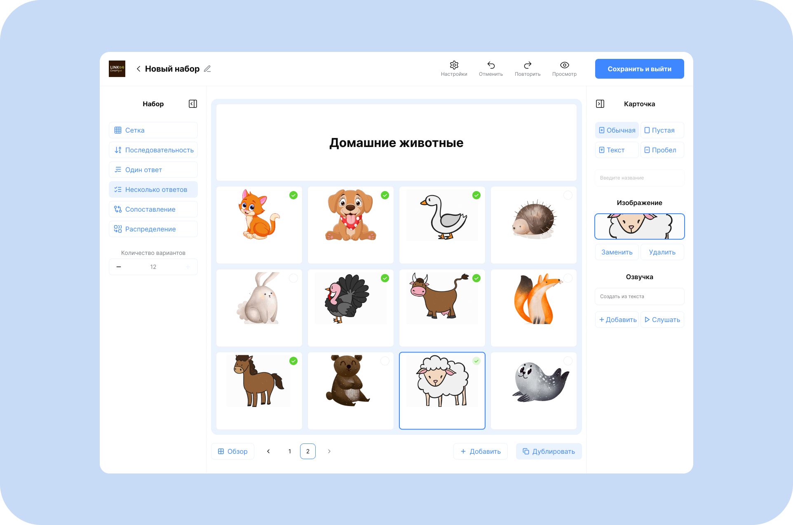
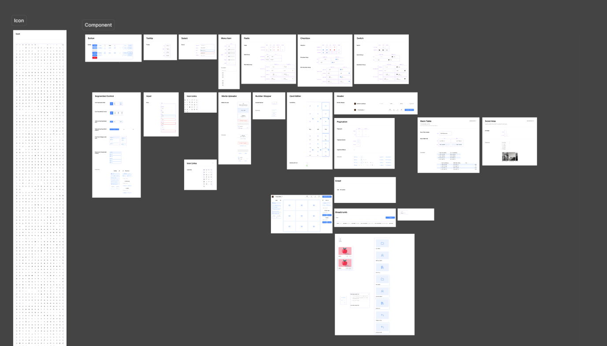
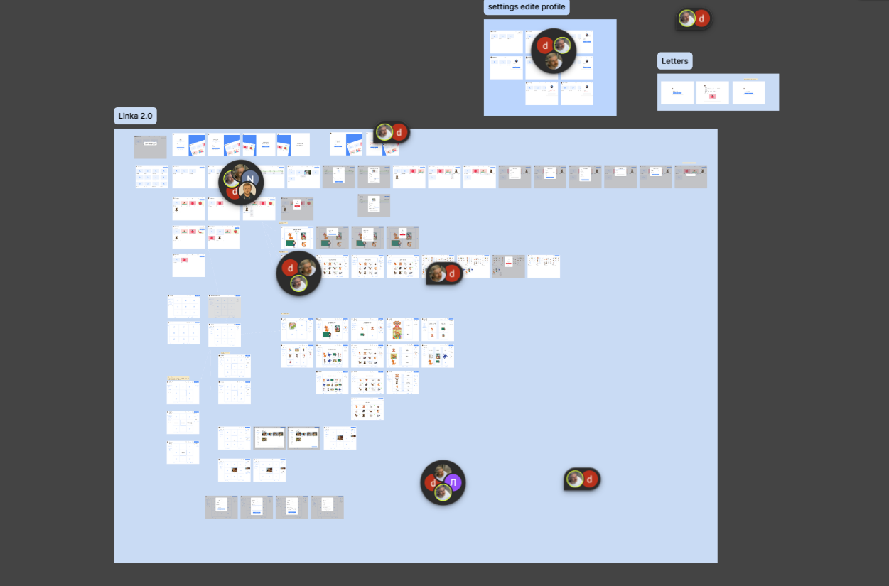
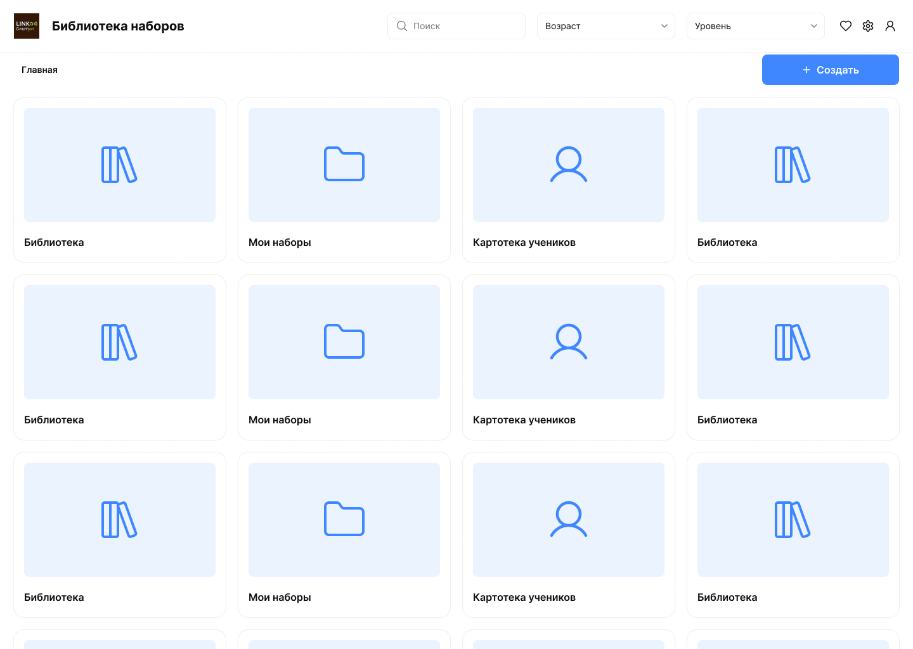
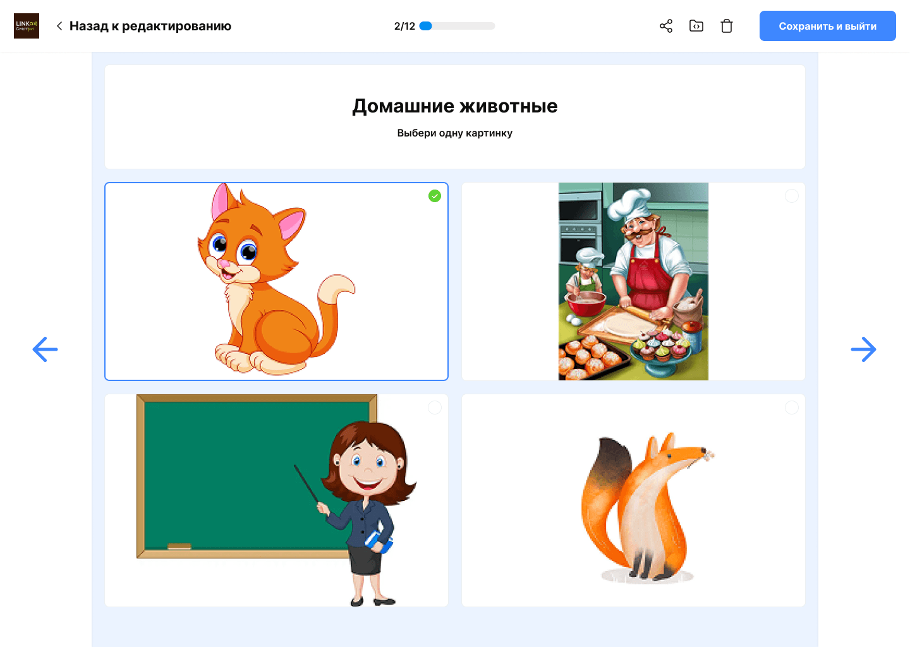

Линка. смотри: Приложение для альтернативной коммуникации

Моя роль: UX/UI дизайнер (проект ради общественного блага). Работа в распределенной команде.
Стек: Figma (Auto Layout, компонентная архитектура)
О проекте
Бесплатная программа для общения, обучения и диагностики людей с тяжёлыми нарушениями речи и моторики (ДЦП, БАС, аутизм). Интерфейсом можно управлять взглядом через айтрекер Tobii, а также с помощью мыши, клавиатуры или специализированного джойстика.
В чём была главная сложность


Стандартные интерфейсные паттерны здесь не работают: пользователь управляет экраном только фиксацией взгляда или нажатием единственной кнопки-триггера.
Необходимо было объединить потребности двух разных групп пользователей:
- Пользователи программы: чистый экран с максимальной контрастностью без визуального шума, где физически сложно промахнуться мимо целевой карточки.
- Родители и специалисты: простой «Редактор наборов», позволяющий человеку без технических навыков быстро добавлять карточки, загружать изображения и настраивать озвучку.
Моя зона ответственности

Фокусировался на прозрачной логике продукта, масштабируемости дизайн-системы и удобстве передачи макетов в разработку:
- Сценарии взаимодействия (User Flows): спроектировал путь создания карточек и тонкую настройку специфических параметров — задержки взгляда для айтрекера и таймингов сканирования для кнопок.
- Компонентная архитектура в Figma: выстроил масштабируемую библиотеку на Auto Layout, позволившую гибко варьировать плотность сетки (от 2 до 100 карточек на экран) без нарушения вёрстки.
- Микроинтеракции: проработал состояния фокуса, таймер удержания взгляда и подтверждение выбора для различных способов ввода.
Ключевые решения

- Эргономика и доступность (A11y): увеличенные области нажатия и комфортные отступы компенсируют тремор и непроизвольные движения глаз. На экране оставлены только функциональные элементы.
- Адаптация под механику ввода: для айтрекеров внедрён круговой индикатор фиксации взгляда, для клавиатур и кнопок — пошаговое сканирование строк с подсветкой активного элемента.
- Простой конструктор для близких: редактор позволяет за пару минут собрать коммуникационную таблицу, привязать синтезатор речи или записать живой голос.
Результат

Команда выпустила доступный цифровой инструмент, который помогает людям с ограниченными возможностями здоровья общаться с окружающими. Разработанная система компонентов ускорила развитие продукта и передачу макетов в разработку.